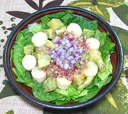

|
Palm Hearts & Avocado SaladBrazil - Salada de Palmito | ||||
| Serves: Effort: Sched: DoAhead: |
4 salad ** 38 min Most |
This salad presents an interesting mix of semi-exotic (but easy to find) ingredients. It's attractive and delicious. This has to be a built salad, if you just toss it, the lettuce rises to the top and everything else sinks. | |||
|
8 1 12 1 1/4 12 ------- 1-1/2 1/4 2 2 1 1/4 2/3 1/3 ------- |
oz c oz T t oz --- oz t T t t c t t --- |
Palm Hearts (1) Pineapple (2) Avocados (3) Lime Juice Salt Romaine Lettuce -- Dressing Shallot Cumin Lime Juice Honey Dijon Mustard Olive Oil, ExtV Salt Pepper ------------ |
Prep - (20 min)
|